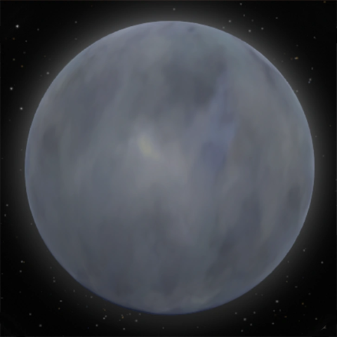

Ya no estás en tu nave. De alguna manera, jugando con las reglas de la física de este extraño universo, has llegado al séptimo planeta del sistema. La transición ha sido tan sutil que apenas te has dado cuenta del cambio, como si la realidad misma se hubiera reconfigurado a tu alrededor.
Te encuentras flotando en el espacio, pero de manera imposible, puedes respirar y moverte como si estuvieras en un ambiente controlado. Frente a ti se extiende un planeta extraordinario, envuelto en una atmósfera nubosa que cambia constantemente de color. Las nubes no son estáticas; se mueven en patrones hipnóticos que parecen seguir leyes físicas completamente diferentes a las que conoces.
La atmósfera del planeta pulsa con tonalidades que van desde azules profundos hasta violetas brillantes, con destellos ocasionales de verde esmeralda y cyan que atraviesan las formaciones nubosas como relámpagos silenciosos. Es imposible ver qué hay en la superficie a través de esta densa capa atmosférica, pero hay algo magnético en este mundo que te atrae irresistiblemente.
La gravedad del planeta comienza a ejercer su influencia sobre ti. No es una fuerza violenta, sino más bien como una invitación gentil pero inevitable. Sientes cómo tu cuerpo es atraído lentamente hacia la superficie, y por más que intentas resistirte o cambiar de dirección, la atracción gravitacional es imparable. Es como si el planeta mismo hubiera decidido que es hora de que lo visites.
A medida que te acercas a las nubes, puedes sentir una energía extraña emanando del planeta. No es amenazante, pero definitivamente es diferente a todo lo que has experimentado en los otros mundos de este sistema solar. Hay una sensación de que este lugar opera bajo reglas completamente distintas, donde lo imposible se vuelve posible y donde la lógica convencional no tiene cabida.